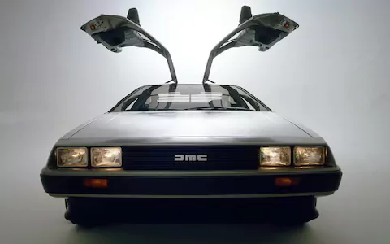
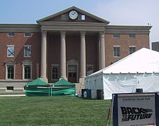

Успевайте купить свой Delorean!
Автомагазин "Старая кляча"
сообщает о поступлении последних партий Delorean DMC-12.
Успевайте купить будущую легенду автопрома.
- Двигатель: V6 объёмом 2.8 литра
- Разгон до 100 км/ч: 10 сек.
- Максимальная скорость: 177 км/ч
- Современный дизайн, компоненты из нержавеющей стали.
- Широкие возможности для тюнинга
Рады вас видеть по адресу Хилл-Вэллей, Эволюционный тупик,
здание 88. Телефон для предзаказа: 88005553535.

Неизветный до фильма, но культовый после, Delorean во всей красе.
Спасите часы
Здание суда (англ. Courthouse)
является ключевым
на протяжении всей трилогии потому, что на
здании суда установлены часы.
Точно
неизвестно, когда началось
строительство,
но в 1885 году оно находилось на поздней стадии.
В том
же году на глазах Марти и Дока во время
фестиваля были запущены
часы, которые позже перенесут под крышу
мэрии. В начале первой части, в 1985 году эти
часы стоят. Они стоят уже 30 лет после того, как в них
попала молния. Они остановились, когда
показывали 22:04. Марти получает
листовку с просьбой спасти часы
от замены,
на листовке указана дата и время
попадания
молнии. Эта листовка волей случая попадает
вместе
с Марти в 1955 год. И именно она подала идею
Марти, откуда взять энергию для машины
времени
для возвращения
назад в будущее. Док
присоединяет к флагштоку над часами
провод,
протягивает над улицей, чтобы Марти,
разогнавшись до скорости 88 миль в час, проехал под этим
проводом точно в 22:04, в момент, когда ударит
молния, и токосъёмник направит энергию в
потоковый накопитель. В конце фильма их
задумка удалась. В альтернативной
реальности 1985 года на месте здания мэрии
построен отель-казино «Рай наслаждений»
(англ. Pleasure Paradise)
внезапно
разбогатевшим Биффом Танненом. Во второй
части трилогии в 2015 году здание мэрии
остеклено,
и ему придан более современный
вид. Под крышей до сих пор красуются часы,
застывшие
60 лет назад на отметке
22:04. Во время погони за
Марти, которого Грифф Таннен принял за
Марти-младшего, Грифф со своими дружками
на летучих досках влетают в стекло здания
мэрии, за что их арестовывают, и тем самым
будущее Марти-младшего
меняется.

То самое вездесущее здание суда Хилл-Вэллей